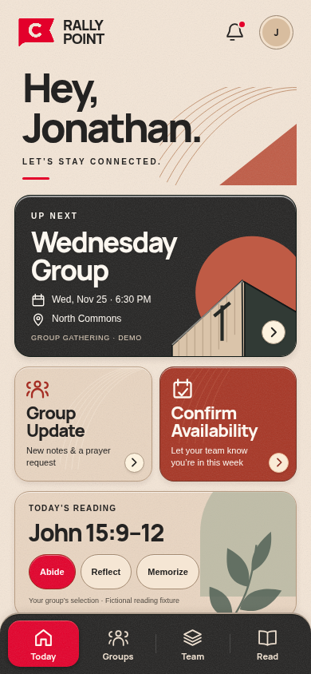
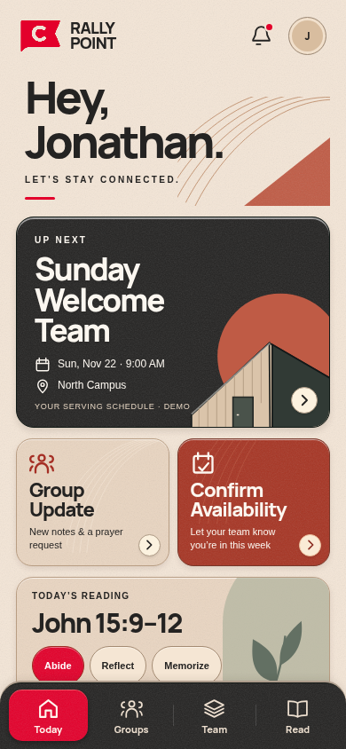
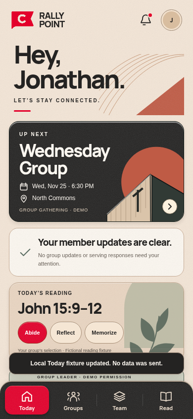
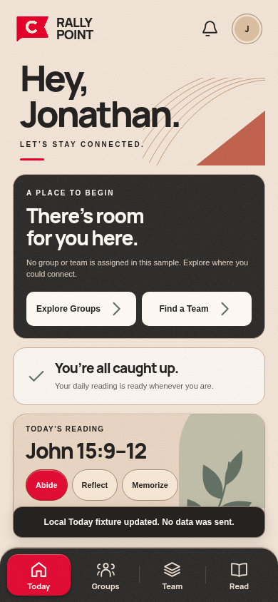
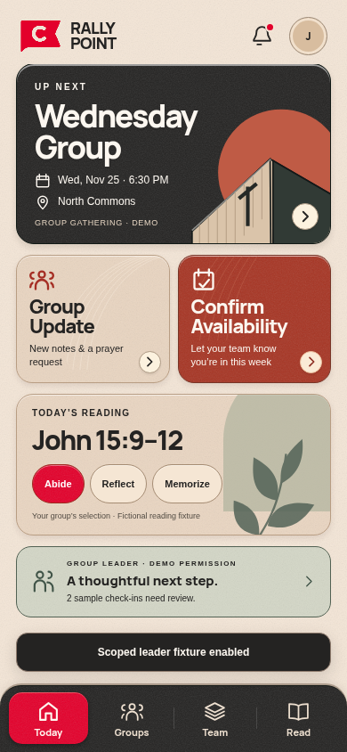
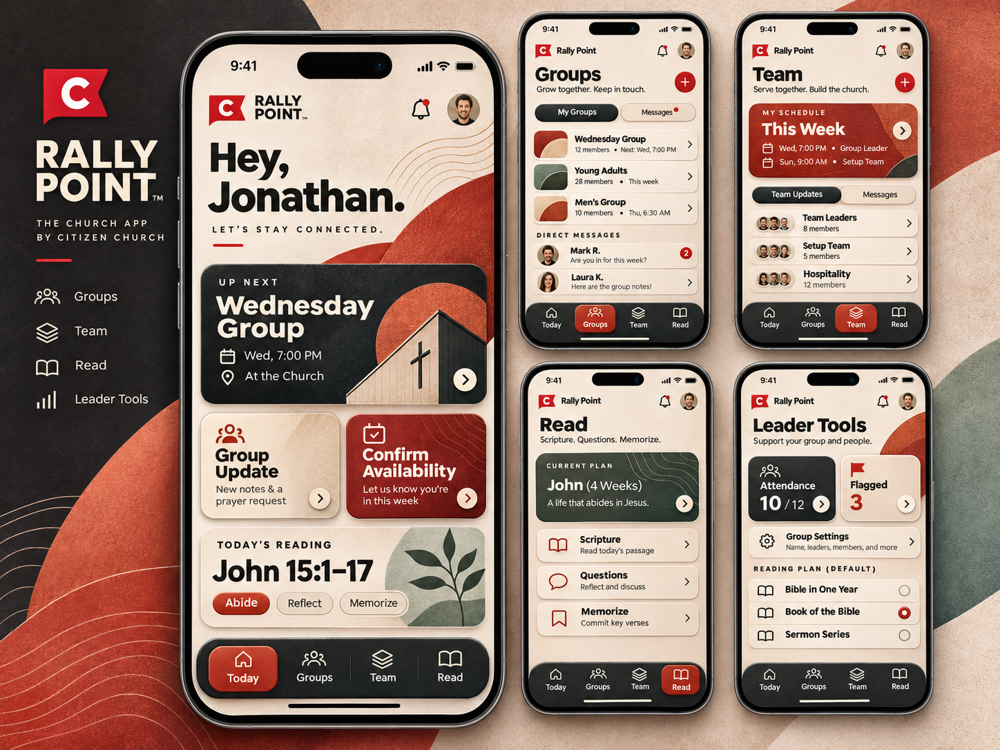

Citizen Church · Rally Point · Phase 1
Approved direction → working Today.
Actual browser captures from the existing application at 390 × 844 CSS pixels. These are functional app screens, not screenshots placed inside the product. The original reference is preserved unchanged in the repository.
Approved Today reference
Implemented · aligned fixture

Implemented · current date

Intentional differences: initials replace unapproved portrait photography; Citizen’s authentic flag shape replaces the older Citizen Connect lockup; no simulated iOS status bar, notch, home indicator or trademark symbol is drawn. The existing John 15:9–12 selection is retained. Memorize is explicitly labeled as a future-phase preview.
Working empty and role-aware states



The supplied complete visual reference
